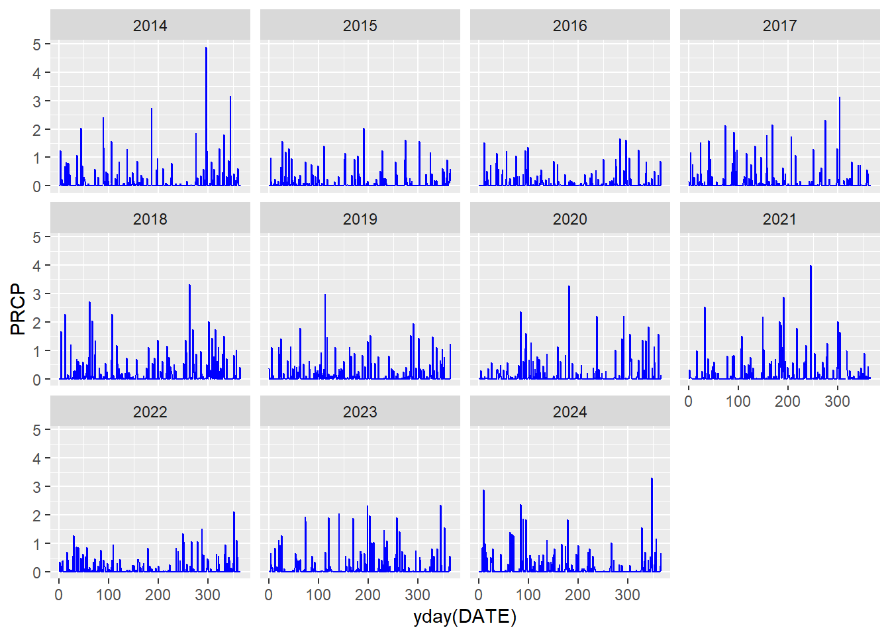
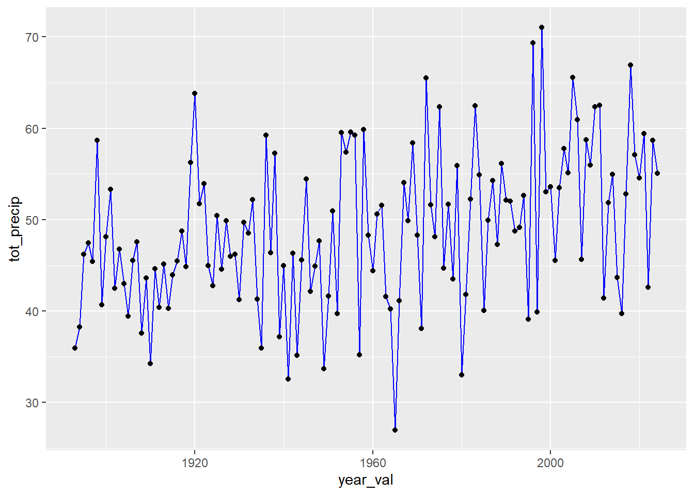

Code
# install.packages("tidyverse")
# install.packages("plotly")We are going to jump right in with some data analysis today! We’ll work with some rainfall data from a meteorological station near Boston that has data going back to the 1890’s.
When you open an Quarto notebook (.qmd) file in RStudio you will see the text, code and output all in your Editor pane. When you click the Visual tab you can preview the formatted document or your can Render the file and it will run all of the code and generate a fully formatted HTML file (other formats such as PDF are also available).
First we’ll install the packages that we need to run our analysis. Once you’ve installed the packages they are on your computer and don’t need to be installed again.
Note that I’ve commented out the install function by using the # symbol. I did this since, I’ve already installed these packages on my computer. You’ll want to copy these commands (without the #) and paste them to your console so that you can run the install functions (if you haven’t already installed these packages on your computer).
# install.packages("tidyverse")
# install.packages("plotly")Next we’ll load in the packages that we need to run our analysis. When you create a new project you’ll need to load in the packages that you want to use (however you will not need to reinstall them). The library() function is used to load packages.
library(tidyverse)
library(lubridate)Now we’ll load in the data from the web and clean it up a bit. FYI, note how I use the # in my code blocks. The # in a code block tells R that what follows the # should be treated as text/comment and thus it is not evaluated as code. This is a good way to add notes directly within a code block.
## Load in data
met_data <- read_csv('http://stahlm.github.io/ENS_215/Data/Blue_Hills_MA_Precip_Temp_Data_1893_2024.csv', skip = 3)Rows: 48212 Columns: 4
── Column specification ────────────────────────────────────────────────────────
Delimiter: ","
dbl (3): TMAX, TMIN, PRCP
date (1): DATE
ℹ Use `spec()` to retrieve the full column specification for this data.
ℹ Specify the column types or set `show_col_types = FALSE` to quiet this message.met_data <- met_data[,1:4]
met_data <- mutate(met_data, DATE = lubridate::as_date(DATE)) # convert date into computable format
#met_data <- select(met_data, -c(TOBS)) # remove the TOBS column, since we won't use itWe’ve got the data stored on our computer in a nice format called a data frame. Let’s take a look at data and get an idea of what we’re working with
head(met_data) # shows us the first few rows and provides info about data typestail(met_data) # shows us the last few rows and provides info about data typesWe see that we’ve got info about the name of the meteorological station (STATION), the dates when measurements were taken, precipitation in inches (PRCP), and the daily min (TMIN) and max (TMAX) temperatures in degrees Fahrenheit.
You can also take a look at the data frame by clicking on the met_data object in the Environment pane. Give this as try.
Now let’s get some summary statistics for our data. This will help us to get a quick overview of our dataset.
summary(met_data) DATE TMAX TMIN PRCP
Min. :1893-01-01 Min. : -3.00 Min. :-21.00 Min. :0.000
1st Qu.:1926-01-01 1st Qu.: 42.00 1st Qu.: 28.00 1st Qu.:0.000
Median :1959-01-01 Median : 58.00 Median : 41.00 Median :0.000
Mean :1959-01-01 Mean : 57.35 Mean : 40.19 Mean :0.135
3rd Qu.:1992-01-01 3rd Qu.: 74.00 3rd Qu.: 55.00 3rd Qu.:0.070
Max. :2024-12-31 Max. :101.00 Max. : 79.00 Max. :8.070
NA's :175 NA's :267 NA's :417 We can already begin to make some interesting observations based on these quick summary statistics. Answer the questions below. Remember that you can type you answers right in your R Notebook - the ability to combine text, code, and output is one of the great features of R Notebooks.
Let’s make a quick plot of the data.
ggplot(met_data) +
geom_line(aes(x = DATE, y = PRCP),color = "blue") 
Now we’ve got a basic figure that is helpful for examining and understanding our data. When you are exploring data it’s useful to quickly plot it up to help you gain understanding and formulate questions/hypotheses. We can create highly customized, publication figures in R by adding some additional code (we’ll learn more about this during the term).
Did you learn anything new about the data by plotting it?
Let’s create another figure, this time just for the data from 2014-2024. Our figure will have a separate panel for each of the years. This figure will be more complex and involve a couple additional transformations of the data to allow us to make the plot.
met_data_2014_2024 <- filter(met_data, year(DATE) >= 2014, year(DATE) <= 2024) # new data frame
ggplot(met_data_2014_2024) +
geom_line(aes(x = yday(DATE), y = PRCP), color = "blue") +
facet_wrap(~year(DATE)) # plot the data
Don’t worry about the code below as it includes some things that we won’t learn for a few weeks. Though spend a few minutes examining the code and see if you can decipher what is going on (chat with your neighbor and see what they think). Call me over and we can chat about what is happening here.
Did this new figure help you learn anything new? Did you notice any interesting or notable events?
Now let’s create some new dataframes that help us gain further insight into the data
Looking at the daily data, it is difficult to see how total precipitation varies from year to year. Let’s create a new variable with annual precipitation data.
met_data <- mutate(met_data,year_val = year(DATE), month_val = month(DATE), day_val = day(DATE)) # add columns for year, month, and day
annual_precip <- group_by(met_data, year_val) # group the data by year
annual_precip<- summarise(annual_precip, tot_precip = sum(PRCP,na.rm = TRUE)) # create a new data frame that has the total annual precipitation (inches)Let’s plot the data and see how annual precipitation varies between years
ggplot(annual_precip) +
geom_line(aes(x = year_val, y = tot_precip),color = "blue") +
geom_point(aes(x = year_val, y = tot_precip),color = "black") 
What do you observe here? Any interesting features of the annual precipitation data?
Let’s check how much it rained in 1965.
filter(annual_precip, year_val == 1965)How does this compare to a typical year? Interpret and discuss this data with your classmates.
Now let’s summarize the data by month. This way we can see if there are seasonal patterns in rainfall for the area around Boston and how a given month’s rainfall varies between years. To visualize the data we’ll create a box plot (also called a box-and-whisker plot).
# Group the data by year and month
monthly_precip <- group_by(met_data, year_val, month_val) %>%
summarise(tot_precip = sum(PRCP, na.rm = TRUE))`summarise()` has grouped output by 'year_val'. You can override using the
`.groups` argument.# Create a box plot of the monthly precipitation data
fig_box <- ggplot(monthly_precip, aes(x=factor(month_val), y=tot_precip)) +
geom_boxplot()
fig_box
Is there much variability in total rainfall between months?
How about within a given month?
Do you notice any interesting features in the data? Discuss with your classmates.
Note: If you are unfamiliar with box plots, we will discuss them in more detail in upcoming lectures, however for a quick intro to them check out this website or check out the Wikipedia page on box plots.
Also take a look at the help file for the geom_boxplot() function. To do this type ?geom_boxplot() in your console
Ok now, let’s create that same box plot, but this time let’s make a cool interactive version using the plotly package.
library(plotly)ggplotly(fig_box)Now let’s answer some questions based on the data we’ve been analyzing.
How rainy was it in the year you were born? (Hint: filter on the annual_precip data)
# Your code hereHow rainy was it in the month you were born? (Hint: use the filter function on monthly_precip and filter by multiple criteria)
# Your code hereDid it rain on the day you were born? (Hint: use the filter function on the met_data and filter by multiple criteria)
# Your code hereIf you finish early, explore anything else that you want to. This could include additional analysis of this data set, or just poking around in RStudio, or anything else related to what you learned today. Feel free to discuss with me or your classmates any ideas you may have. I am happy to suggest some potential ideas to explore.
# Your code hereAt the end of class you should Render your Notebook to an html file. When you render your Notebook, it runs all of your code and generates an html file that has all of the text, code, and results together in a nice an easy to view/share format.
To Render the Notebook, you can go up to the header and replace the line directly below the title: line with the following:
format: html
author: "Your Name Here"
date: "Date here"
Then click Render and your Notebook will be rendered to an html file.
In your first analysis you analyzed nearly 50,000 daily precipitation measurements! You were able to summarize, visualize and filter the data in ways that would have been tedious, error-prone, and time-consuming if you have tried to do it in Excel. You can also modify and re-run your analysis to answer new questions or work with a different dataset, which would require starting from scratch in Excel. Furthermore, you’ve generated a nice notebook that clearly documents your code, results and interpretation all in one place! You could easily share this notebook with colleagues when working on collaborative projects and you have a clearly documented and reproducible workflow.